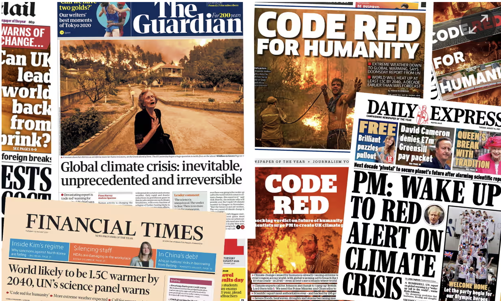
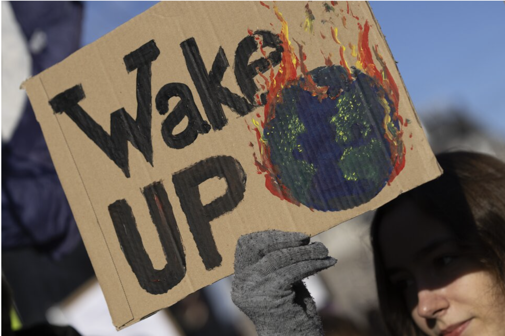

Is climate change a threat to our future?
Introduction
Module 1
As wildfires rage through California in early 2025, the question of climate change's impact on our world feels more relevant than ever. This project aims to explore several key questions: Is climate change human-caused? How do different communities perceive and discuss climate issues? What are the documented effects, and how might they shape our future? The science of weather and climate has evolved beyond purely academic discourse into a topic that generates significant discussion in both scientific and public spheres. Through careful analysis of public sentiment and scientific data, this research seeks to understand how people perceive climate change and its potential impacts on our shared future.
Climate change stands as one of the most significant and divisive issues of our time, fundamentally split between those who view it as an urgent global crisis requiring immediate action and those who question either its existence or its anthropogenic nature. This debate has evolved from a purely scientific discussion into a complex sociopolitical issue that affects policy-making, economic decisions, and international relations. The scientific consensus, supported by organizations like the Intergovernmental Panel on Climate Change (IPCC), points to human activities, particularly the emission of greenhouse gases, as the primary driver of observed climate change since the mid-20th century. However, the interpretation and response to this evidence have become deeply polarized, affecting how society approaches potential solutions.
On one side of the debate are climate scientists, environmental activists, and many world governments who argue that climate change poses an existential threat to human civilization. They point to rising global temperatures, increasing frequency of extreme weather events, melting polar ice caps, and rising sea levels as evidence of a rapidly changing climate that requires immediate and decisive action. This group advocates for significant reductions in greenhouse gas emissions, transition to renewable energy sources, and fundamental changes to our economic and industrial systems. The opposing perspective, represented by some industry groups, political figures, and skeptics, questions either the severity of climate change, humanity's role in it, or the proposed solutions' economic viability. They often argue that climate change is part of natural planetary cycles, that the economic costs of proposed solutions outweigh their benefits, or that technological advancement rather than regulatory action is the appropriate response.
The controversy particularly affects vulnerable populations, including coastal communities threatened by rising seas, agricultural regions facing changing weather patterns, and developing nations struggling to balance economic growth with environmental protection. The debate has significant implications for various sectors of society, from energy and transportation to agriculture and urban planning. The economic implications are especially contentious, with concerns about job losses in traditional industries competing against arguments for green job creation and long-term environmental costs. This complex interplay of scientific evidence, economic interests, and political ideologies makes climate change one of the most challenging issues of our time, requiring careful analysis of both the physical evidence and the various stakeholders' perspectives to develop effective and equitable solutions.